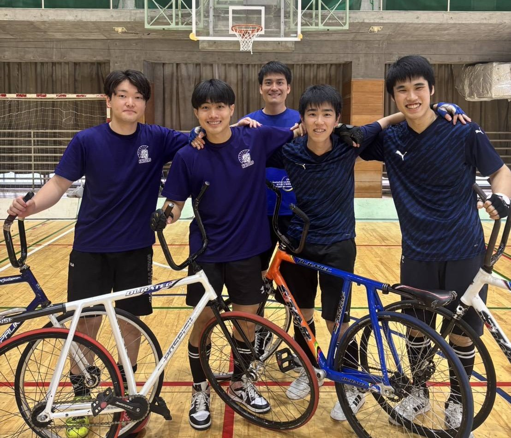

2026全日本夏季学生室内自転車競技選手権において、東京科学大学からは2チーム、早稲田との合同チームが1チームが出場し、 結果は以下の通りとなりました。
-
S.Tokyo１
福田・山本ペア
優勝 -
S.Tokyo２
牧野・柳井ペア
４位 -
早稲田
森山・元木ペア
予選リーグ敗退
今大会は東西全12チームが出場し、 S.Tokyo１が優勝という結果になりました。
全日本選手権の前日に行われた学生大会であり、 関東から3チーム、関西からは一年生のペアなどを含む9チームが出場した大会でした。
予選リーグではS.Tokyoと早稲田が対決。早稲田はこのペアでの大会出場は初めてではあったものの、 結成三年目のS.Tokyo2ペアと熱戦。点の取り合いの展開でしたが、S.Tokyo2が5-4で勝利をおさめ決勝トーナメントに進出しました。
S.Tokyo2は決勝トーナメントの準決勝で関大1と再戦。 予選で大敗したことから堅実な立ち回りでしたが得点機会に恵まれず0-3で敗北。 ３位決定戦でも精彩を欠き2-3で敗北する形となりました。
今大会唯一の4年生ペアS.Tokyo１は決勝までは順調に勝ち上がり、関大1と対戦。 緊張したロースコアの展開が続きながらも試合を2-1でものにし、優勝という結果になりました。

決勝戦の顔ぶれ（左：関大1 右：S.Tokyo１）
柳井 大河選手（システム制御系学士３年）のコメント
考え中